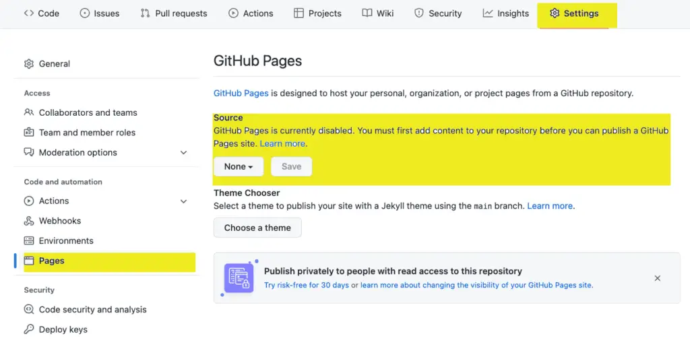

One of the features I love most about working in Jupyter Lab and Jupyter Notebooks is that it supports visual, interactive experiments with code and documenting what you’re doing in Markdown. (If you need a more general primer on using Jupyter, check out Jupyter Notebook: A Complete Introduction). With tools like Binder or CoCalc, it’s also possible to publish fully live Jupyter Notebooks with which programmers can interact. I haven’t availed myself of this yet because I am focused on blogging, but I plan to do something along these lines in the future.
Meantime, while researching some NumPy features, I stumbled by accident onto some excellent tools for publishing Jupyter Notebooks not as interactive notebooks but as online documentation. Two of these tools that we want to explore in this article are:
Jupyter Book is a tool for publishing publication-quality books and online content from Jupyter Notebook files.
Jupytext, a Jupyter plugin that can save Jupyter Notebook files as markdown files in various formats. It supports publishing to Jupyter Book as well as Sphinx, an extremely popular tool in the Python community and the publication tool behind the huge variety of Open Source documentation hosted on ReadTheDocs.org.
Why This Is Important To Me¶
Writing as I do every day on the CodeSolid site, it’s become clear that I still have a lot to learn about balancing raw productivity with creating a very high-quality product. For example, I recently posted a set of practice exercises for NumPy. Writing this was fun to do, and though I could work through those exercises and publish the article quickly enough to reach my target “words-per-day” goal, I felt like I really should have a solution set posted somewhere.
It turns out that experiencing unintended consequences of measuring “the wrong thing” is not something I made up. Indeed, it’s a common enough mistake in management and personal goal setting that it has been generalized in a couple of maxims known as Goodhart’s Law and Campbell’s Law. In my case, the perfectly reasonable goal of writing a certain amount per day, taken with a family and a full-time job, meant I needed to tweak the measurement to include some quality-related goals. Meantime, that same “words-per-day” goal meant that I had to move on to this article, knowing that I did not publish that solution set and didn’t publish the repository for the recent Learning Julia from Python article either.
I intend to turn that around in this article by experimenting with a repository for Jupyter Notebooks that can serve as additional documentation or interactive notebooks. If this experiment is successful, it will allow me to focus on producing a high-quality product that:
Can be published as documentation.
Can have links to a Binder site to allow the code to be run interactively. I may convert this into a course offering at some point, but the idea is to make it avaiable on Binder for now.
Can also support articles that are published here (likely through WordPress’s CommonMark plugin).
As valuable as these things might be, inevitably, having a “sister” site for much of the source code will result in more complexity. However, I think it’s a worthwhile goal to pursue as an experiment, and if my readers respond positively, this extra complexity is something I can manage.
JupyterBook vs Sphinx¶
I have worked with Sphinx in the past, and I like the look and feel of the published result. However, I prefer Markdown to reStructuredText, so this language from the JupyterBook documentation was the deciding factor for me:
Sphinx primarily uses a markup language called reStructuredText to write documents. This is similar to markdown, though is less-popular and more flexible. In contrast, Jupyter Book uses MyST Markdown, which was created to provide the flexibility of rST but for people who wish to write markdown.
In addition, though I’ve seen suitable materials on how to use Sphinx on a GitHub pages site, JupyterBook comes with a cookiecutter feature that sets up a starter book with the necessary GitHub actions baked in.
Now that we’ve selected the tool, JupyterBook, and the target hosting platform, GitHub Pages, let’s walk through the task together.
Creating the Repository for GitHub Pages¶
If you’re not familiar with them, GitHub Pages are a popular tool for automatically standing up a static website from code checked into a GitHub-hosted repository. By default, GitHub pages serve up content based on Jekyll, a popular, Markdown-based tool for generating static websites. Still, we’re going to count on the JupyterBook magic to provide the GitHub actions needed for us to move forward.
To use GitHub Pages, we start by creating a name for the repository in the form
I generally use – and recommend – the GitHub CLI for managing GitHub repositories, so I begin this way:
gh repo create CodeSolid/CodeSolid.github.io --public
✓ Created repository CodeSolid/CodeSolid.github.io on GitHub
The reason for prefixing the repository name with the organizational name is that the GitHub CLI will otherwise default to my individual account. Don’t prefix the repository name with the account name if you’re doing this on a personal account.
The last step created the repository, but next, we need to clone it locally:
gh repo clone CodeSolid/CodeSolid.github.io
Cloning into 'CodeSolid.github.io'…
warning: You appear to have cloned an empty repository.
Not to worry, it won’t be an empty repository for long.
Using JupyterBook to Create the Starter Pages¶
Let’s go into our repository and create a virtual environment for JupyterBook and only the basic JupyterBook toolset and some files the sample notebook can use for now.
cd CodeSolid.github.io # Or your repository name
python3 -m venv .venv
echo .venv >> .gitignore
source .venv/bin/activate # Substitute .venv\scripts\activate.bat on Windows
pip install jupyterlab jupyter-book jupytext cookiecutter pandas seaborn
pip freeze > requirements.txt
This installation will take several seconds. When it finishes, we can use the JupyterBook cookiecutter to install what we hope will be a GitHub-ready starter.
jupyter-book create --cookiecutter ./
The cookiecutter program will prompt you for several variables like your name, the book’s name, a slug for the book, etc. One surprising thing to me was that it stored the resulting source in a subfolder named after the value I’d given for the book slug. We’ll assume that’s correct and commit and push what we have so far to the repository.
git add .
git commit -m"Initial commit of JupyterBook CookieCutter"
git push -u origin main
The next step is to tell GitHub pages what branch will serve as the source branch for our published pages. We need to do that step on GitHub via the web API. In the repository home, click on settings, then change the default “None” branch to “gh-pages.”

The Results So Far¶
I got it all to work in the long run, and the site is up at CodeSolid.github.io. At present, it’s a mix of a decent new logo I did today, the NumPy Exercise Solutions I mentioned at the outset, and not too much else. So I believe it’s a good starting point for future efforts. Now I can review my existing articles to post those exercises. I will also build out a lot more documentation and practice (especially for beginners). Having a set of Notebooks as documentation will be a great adjunct to the site over time.
There has been one disappointment, however. The integration with MyBinder.org has proven to be problematic. In the first place, it takes too long for a user to launch pages interactively. In the second place, it was challenging to thread the tiny needle of “Python packages that work just fine locally and when building on GitHub, then break when they get to Binder.”
There are integrations with Colab and JupyterHub I could try in the future. I want to get it working on CoCalc, but on that front, JupyterBook has an open issue, so it may not be forthcoming unless I pitch in and fix it myself.